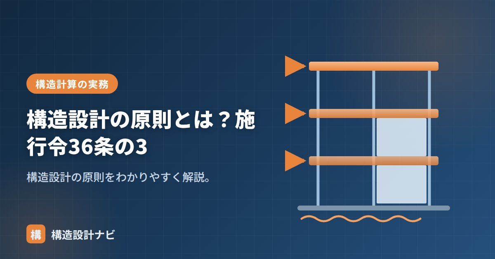

構造設計の原則とは？施行令36条の3

構造設計の原則とは、建築基準法施行令第36条の3に定められた、構造設計を行ううえでの基本姿勢のことです。個別の許容応力度や部材断面の数値基準を定める規定ではなく、それらすべての前提となる考え方を示している点が特徴です。いわば構造設計という作業全体を貫く「憲法」のような位置づけであり、この原則を理解しておくと、細かな計算ルールがなぜ存在するのかを腹落ちして理解しやすくなります。
- 構造設計の原則は施行令36条の3が定める、安全・釣合い・一体性の3本柱
- 個々の部材の強さだけでなく、建物全体としてのバランスと力の伝達経路を重視する
- 偏心率・剛性率の検討や保有耐力接合は、この原則を数値・仕様として具体化したもの
施行令36条の3の内容（要旨）
要旨は次のとおりです。建築物の構造設計にあたっては、構造耐力上主要な部分が、建築物に作用する自重・積載荷重・積雪・風圧・土圧・水圧・地震その他の震動および衝撃に対して構造耐力上安全であるように、釣合いよく配置し、かつ、それらの接合部などの構造方法を含めて一体性を確保すること、とされています。この条文は抽象的な理念を述べたものですが、以降に続く許容応力度・材料強度・仕様規定などの各条項は、すべてこの原則を実現するための具体的な手段と位置づけられます。
ポイント：3つの柱
- 安全性：各種荷重・外力に対して構造耐力上安全であること。
- 釣合い（バランス）：耐力要素を平面・立面でバランスよく配置する（偏心・剛性のバランス）。
- 一体性：接合部・継手を含め、建物全体が一体として力を伝えること。
この3つは互いに独立しているのではなく、密接に関係しています。たとえば耐力壁の量が足りていても（安全性）、平面的に片側に寄って配置されていれば（釣合い不足）、地震時に建物がねじれるように変形し、想定した安全性が発揮されません。さらに、耐力壁と柱・梁の接合が不十分（一体性不足）であれば、そもそも力がスムーズに伝わらず、部材が本来の性能を発揮できないおそれがあります。
構造耐力上主要な部分との関係
この原則の対象は構造耐力上主要な部分（基礎・柱・梁・耐力壁・斜材など）です。個々の部材が基準を満たすだけでなく、全体としてバランスよく・一体に力を伝えることが求められます。偏心率・剛性率の検討や接合部の保有耐力接合は、この原則を具体化したものです。
| 柱 | 意味 | 関連する検討 |
|---|---|---|
| 安全性 | 荷重・外力に対する耐力の確保 | 許容応力度計算・保有水平耐力計算 |
| 釣合い | 平面・立面でのバランス | 偏心率・剛性率の算定 |
| 一体性 | 接合部を含めた力の伝達 | 保有耐力接合・継手の検討 |
実務での活かし方
実務では、構造計画の初期段階でこの原則を意識することが、後工程の手戻りを防ぐ近道になります。耐力壁や柱の配置を平面図に落とし込む際は、単に必要壁量を満たすだけでなく、四隅や外周にバランスよく配置できているかを確認します。立面的にも、上下階で耐力要素の位置がそろっているか、極端な壁量の急変がないかをチェックすると、剛性率の検討結果も安定しやすくなります。接合部については、木造の継手・仕口や鉄骨造の溶接・ボルト接合など、構造種別に応じた一体性の確保策を早い段階で図面に反映しておくことが重要です。
「構造耐力上主要な部分」「構造強度」「偏心率・剛性率」をどうぞ。
耐力壁の配置図を描き終えた段階で、私は一度手を止めて偏心の目算をします。壁量が足りていても四隅の配置が片側に寄っていると後工程の剛性率計算でやり直しになることが多く、初期段階での目算が結局いちばんの近道だと感じています。
構造設計の原則が求める3つのこと（図解）
「一体性」がなぜ重要なのか
3つの原則の中で、実務でもっとも判断が難しいのが②の一体性です。部材ごとの計算は数値で確かめられますが、「一体になっているか」には決まった数値基準がありません。
| 一体性が問われる場面 | 問題になること | 対処 |
|---|---|---|
| 柱と梁の接合部 | ピンなのか剛接合なのか | モデル化と実際の納まりを一致させる |
| 基礎と上部構造 | アンカーボルト・柱脚が力を伝えられるか | 柱脚形式の選定と定着長さの確保 |
| 床と耐力壁 | 地震力が壁まで届くか | 水平構面の確保、剛床化 |
| 増築部と既存部 | 別々に揺れて衝突しないか | 構造的に一体化するか、エキスパンションで分離するか |
| 異種構造の併用 | RC部分とS部分の変形の差 | 接合部で変形差を吸収する設計 |
とくに増築では、この条文の意味が鮮明になります。既存建物に増築部を「くっつけただけ」にすると、地震時に別々に揺れて接合部が破壊されます。だから設計では「完全に一体化する」か「エキスパンションジョイントで完全に分離する」かのどちらかに徹する必要があり、中途半端が一番危険です。
日常設計への活かし方
実務では、法令に具体的な規定がない状況に頻繁に出会います。「この納まりで力は伝わるのか」「この程度の隙間は許容されるか」——そうしたとき、判断のよりどころになるのが36条の3の考え方です。
たとえば意匠設計者から「この柱を抜きたい」と言われたとき、単に「計算が成立しない」と答えるのではなく、「力の伝達経路が途切れる（一体性が損なわれる）」という説明ができれば、代替案（梁を大きくする、別の位置に柱を立てる）の議論に進めます。
条文の暗記としてではなく、「安全・一体・耐久の3つの視点でこの設計は説明できるか」という自問のフレームとして持っておくと、日々の判断が一貫します。
よくある質問
Q1. 施行令36条の3には具体的な数値が書かれていないのに、なぜ重要なのですか？
数値規定のない場面で判断のよりどころになるからです。個別の条文がカバーしていない納まりや接合部について、「安全性・一体性・耐久性の3つの視点で説明できるか」を問う枠組みとして機能します。実務では、柱の位置変更や増築の可否を説明する際の根拠として日常的に使われます。
Q2. 「一体となるようにすること」とは具体的に何を指しますか？
構造耐力上主要な部分どうしが、確実に応力（力）を伝え合える状態にすることを指します。具体的には柱梁接合部の設計、柱脚と基礎の緊結、床から耐力壁への力の伝達（水平構面）などです。とくに増築では、完全に一体化するかエキスパンションジョイントで完全に分離するかのどちらかに徹する必要があります。
Q3. 耐久性への措置は構造計算で代替できますか？
できません。腐食・腐朽・摩損は時間とともに進む現象で、構造計算では表現できないためです。防腐・防蟻処理、コンクリートのかぶり厚さの確保、鋼材の防錆処理などは、耐久性等関係規定として計算による代替が認められていません。
まとめ
- 構造設計の原則は施行令36条の3に定める基本姿勢。
- 構造耐力上主要な部分を、安全・釣合い・一体性をもって設計する。
- 偏心率・剛性率の検討や保有耐力接合は、この原則の具体化。
- 構造計画の初期段階から3つの柱を意識すると、後工程の手戻りを防げる。